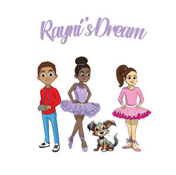

Trade Mark Journal No.2025/011 14 March 2025
UK00004167524 1 March 2025 (25,28,41)

- Class 25
- Clothing; Knitwear [clothing]; Jackets [clothing]; Ready-to-wear clothing; Woolen clothing; Furs [clothing]; Garments for protecting clothing; Linen clothing; Layettes [clothing]; Clothing layettes; Headbands [clothing]; Headbands for clothing; Gloves [clothing]; Gloves as clothing; Clothes; Aprons [clothing]; Maternity clothing; Kerchiefs [clothing]; Jerseys [clothing]; Denims [clothing]; Shorts [clothing]; Cashmere clothing; Capes (clothing); Oilskins [clothing]; Gabardines [clothing]; Silk clothing; Leather clothing; Clothing of leather; Leather (Clothing of -); Collars [clothing]; Parts of clothing, footwear and headgear; Veils [clothing]; Knitted clothing; Hoods [clothing]; Windproof clothing; Corsets [clothing, foundation garments]; Embroidered clothing; Wristbands [clothing]; Belts [clothing]; Belts for clothing; Bandeaux [clothing]; Rainproof clothing; Waterproof clothing; Casual clothing; Visors [clothing]; Jackets being sports clothing; Jackets (Stuff -) [clothing]; Stuff jackets [clothing]; Bottoms [clothing]; Playsuits [clothing]; Clothing for leisure wear; Ready-made clothing; Trunks being clothing; Latex clothing; Woven clothing; Infant clothing; Drawers [clothing]; Drawers as clothing; Leisure clothing; Ties [clothing]; Athletic clothing; Clothing for sports; Sports clothing; Clothing for children; Muffs [clothing]; Clothing for babies; Bodies [clothing]; Tops [clothing]; Clothing for infants; Weatherproof clothing; Clothing for cycling; Pockets for clothing; Water-resistant clothing; Fabric belts [clothing]; Triathlon clothing; Clothing for skiing; Handwarmers [clothing]; Beach clothing; Cowls [clothing]; Chaps (clothing); Thermal clothing; Men's clothing; Fishing clothing; Braces for clothing; Mitts [clothing]; Dance clothing.
- Class 28
- Toys; Toys, games, and playthings; Toys and playthings for pets; Ride-on toys; Cuddly toys; Puzzles [toys]; Toys for sandpits; Plush toys; Stuffed toys; Inflatable toys; Toys for babies; Noisemakers [toys]; Wind-up toys; Toys for pets; Fidget toys; Toys for use in perambulators; Plastic toys; Radio-controlled toys; Crib toys; Scooters [toys]; Toys for animals; Mobiles [toys]; Toys, games and playthings for pet animals; Pet toys; Windup toys; Toys for cats; Rattles [toys]; Toys for infants; Wooden toys; Model cars [toys or playthings]; Toys and playthings for pet animals; Toys for dogs; Toy dolls; Educational toys; Bendable toys; Outdoor toys; Toy playsets; Models being toys; Bath toys; Infant toys; Dog toys; Sandbox toys; Bathtub toys; Action figures [toys or playthings]; Electronic toys; Inflatable ride-on toys; Whistles [toys]; Sand toys; Controllers for toys; Soft toys; Bouncing toys; Miniature car models [toys or playthings]; Drones [toys]; Cloth toys; Musical toys; Tricycles for infants [toys]; Toy figurines; Toy furniture; Play mats for use with toy vehicles [playthings]; Mechanical toys; Wheeled toys; Toys for birds; Clockwork toys; Developmental toys; Fluffy toys; Plastic toys for use in the bath; Crib mobiles [toys]; Stuffed animals [toys]; Inflatable bath toys; Stacking toys; Fabric toys; Modular toys; Rocking toys; Water toys; Plastic models being toys; Model toys; Drawing toys; Play mats incorporating infant toys [playthings]; Whack-a-mole toys for pets; Toy prams; Action toys; Stuffed and plush toys; Stuffed plush toys; Plush stuffed toys; Battery-operated action toys; Children's toys; Sketching toys; Squeezable squeaking toys; Smart toys; Toy bicycles; Whistling toys; Plastic character toys; Toy tableware; Construction toys; Clockwork toys [of plastics]; Articles of clothing for toys; Toy wheelbarrows; Push toys; Squeeze toys; Talking toys; Toy bakeware and toy cookware; Toy mobiles; Toy xylophones; Bendy balls being toys; Stuffed bean-filled toys; Toy animals; Clothing for toy figures; Pull toys; Toy cars; Chewing toys for parrots; Assembly toys; Toys for pet animals; Toy strollers; Toy balloons; Water-squirting toys; Toy scooters; Intelligent toys; Music box toys; Toy hats; Punching toys; Toy harmonicas; Toy cookware; Toy automobiles; Toy robots; Smart plush toys; Toy tools; Toy weapons; Toys in the form of puzzles; Xylophones being musical toys; Novelty toys for parties; Toy glockenspiels; Soft sculpture toys; Inflatable pool toys; Costumes being childrens playthings; Toy pushchairs; Toy bakeware; Toy balls; Puzzle mats [toys]; Toy airplanes; Toy vehicles; Playthings.
- Class 41
- Production of animation; Production of animated cartoons; Animation production services; Special effects animation services for film and video; Production of animated motion pictures; Creating animated cartoons; Services in the production of animated motion picture entertainment; Services in the production of animated motion pictures and television features; Production of animated cine-film clips; Production of animated and live action programmes; Production of motion picture films; Motion picture film production; Production of video films; Animated musical entertainment services; Video film production; Production of a continuous series of animated adventure shows; Production of pre-recorded video films; Post-production editing services in the field of music, videos and film; Rental of cinematographic and motion picture films; Audio, video and multimedia production, and photography; Showing of cinematographic and motion picture films; Production of animated programmes for use on television and cable; Motion picture studios; Exhibition of video film sound tracks; Rental of motion picture films; Audio and video production, and photography; Video and DVD film production; Motion picture song production; Rental of motion picture and television scenery; Motion picture production; Publishing of interactive computer and video game software; Motion picture studio services; Providing age ratings for television, movie, music, video and video game content; Film editing (Cinematographic -); Production of graphical cine-film clips; Production of motion pictures; Video production; Recording, film, video and television studio services; Video editing; Cinematographic film studio services; Film editing; Exhibition of video films; Theatrical performances both animated and live action; Film and video tape film production; Production of pre-recorded cinema films; Film production, other than advertising films; Rental of video films; Audio, film, video and television recording services; Production of movie special effects; Production of cinematographic films; Dubbing for movies; Production of educational sound and video recordings; Cinematographic adaptation and editing; Video tape film production; Production of films in studios; Computer and video game amusement services; Production of special effects for films; Special effects (Production of -) for films; Production of musical videos; Consultancy on film and music production; Production of television game shows; Rental of lighting apparatus for movie sets or film studios; Film studios; Audio and video editing services.
Ornella Matondo